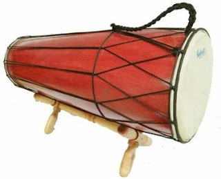
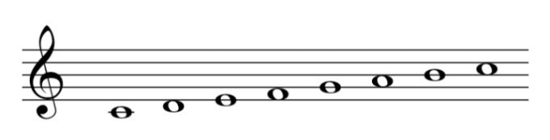

Click in Here
Click Now!!
Join Now My Game In The World
- 1. Di bawah ini merupakan langkah awal yang dapat dilakukan untuk menciptakan sebuah lagu. Kecuali untuk hal berikut....
- A. Menuliskan ide yang muncul seketika sebagai lirik atau melodi
- B. Membayangkan sebuah ide yang ingin digarap atau sedang digeluti secara intens kemudian dituliskan sebagai melodi
- C. Menuliskan lirik dari suasana yang terjadi di sekitar
- E. Menuliskan lirik dari sesuatu yang menjadi obsesi selama bertahun-tahun
- 2. Unsur melodi yang bagus akan terdengar indah di telinga pendengar. Contoh, untuk suasana anggun atau hikmat, melodi-melodi musiknya cenderung lambat dan bernada-nada panjang. Hal ini merupakan....
- A. Unsur modern yang estetis
- B. Unsur yang menimbulkan rasa estetis dalam musik
- C. Unsur pencerahan dalam musik
- D. Unsur spiritual
- E. Unsur yang menimbulkan kesenangan tanpa keindahan
- 3. Notasi pada paranada mempunyai arti dan nama jika tanda kunci sudah digunakan. Fungsi kunci G adalah....
- A. Sebagai pengikat atau penanda garis kedua dalam paranada, sehingga not yang berada di garis kedua dibaca sebagai notasi G
- B. Sebagai pengikat atau penanda garis ketiga dalam paranada, sehingga not yang berada di garis ketiga menjadi notasi G
- C. Sebagai pengikat atau penanda garis keempat dalam paranada, sehingga not yang berada di garis keempat menjadi notasi G
- D. Sebagai pengikat atau penanda garis kelima dalam paranada, sehingga not yang berada di garis kelima menjadi notasi G
- E. Sebagai pengikat atau penanda garis pertama dalam paranada, sehingga not yang berada di garis pertama menjadi notasi G
- 4. Tanda birama merupakan petunjuk tentang pola irama yang diinginkan oleh penciptanya. Tanda birama ini biasanya ditempatkan di awal lagu. Deskripsi yang benar adalah sebagai berikut….
- A. Birama 4/4 berarti nada-nada pada setiap ruas birama berdurasi dua ketukan dan setiap ketukan bernilai ¼
- B. Birama 4/4 berarti nada-nada pada setiap ruas birama berdurasi tiga ketukan dan setiap ketukan bernilai ¼
- C. Birama 4/4 berarti nada-nada pada setiap ruas birama berdurasi empat ketukan dan setiap ketukan bernilai ¼
- D. Birama 4/4 berarti nada-nada pada setiap ruas birama berdurasi satu ketukan dan setiap ketukan bernilai ¼
- E. Birama 4/4 berarti nada-nada pada setiap ruas birama berdurasi enam ketukan dan setiap ketukan bernilai ¼
- 5. Akor dominan mayor dalam tangga nada As tersusun dari nada tonika-tertskwint dari akor tersebut, dengan interval terts besar dan kwint murni, nada-nadanya adalah....
- A. E – Gis – B
- B. A – C – E
- C. Es – G – Bes
- D. As – C – Es
- E. As – Ces – Es
- 6. Akor tonika mayor dalam tangga nada As tersusun dari nada tonika-tertskwint dari akor tersebut, dengan interval terts besar dan kwint murni, nada-nadanya adalah...
- A. E – Gis – B
- B. A – C – E
- C. Es – G – Bes
- D. As – C – Es
- E. As – Ces – Es
- 7. Cara mengaransemen yang dilakukan dengan membuat variasi gerak (progresi) akor-akor, dan dikembangkan dengan berbagai teknik pada akor dan tangga nada, merupakan cara dengan…
- A. Menciptakan variasi harmoni pada melodi lagu
- B. Menciptakan jembatan melodi
- C. Menggunakan berbagai teknik
- D. Mendorong agar lagu bisa diiringi dengan akor
- E. E – Fis – Gis
- 8. Seorang penata musik mengubah pola irama dari sebuah pola dan kemudian mengembalikannya ke pola semula. Variasi irama dimaksudkan agar lagu tidak terkesan membosankan, cara seperti ini dalam aransemen adalah….
- A. Membuat variasi pada melodi
- B. Membuat variasi pada pola irama lagu
- C. Membuat variasi pada awal dan akhir lagu
- D. Memberikan akor
- E. Mengolah progresi akor
- 9. Pada melodi, bisa ditambahkan irama/ritme yang sesuai dengan suasana tersebut. Bila lagunya santai, sebaiknya gunakan ritme yang teratur dan santai juga. Jangan menggunakan ritme yang melompat karena akan mengganggu suasana melodinya. Bagaimana sebaliknya, bila suasana gembira….
- A. Bisa digunakan ritme yang melompat dan dinamis
- B. Mempertahankan ritme yang tetap mengalun
- C. Menggunakan tempo yang paling lambat
- D. Memberi tempo di marcia
- E. Melodi dibiarkan mengalir saja
- 10. Demikian juga dengan kunci F yang memiliki fungsi sebagai berikut....
- A. Sebagai pengikat atau penanda garis kedua dalam paranada, sehingga not yang berada di garis kedua dibaca sebagai notasi F
- B. Sebagai pengikat atau penanda garis ketiga dalam paranada, sehingga not yang berada di garis ketiga menjadi notasi F
- C. Sebagai pengikat atau penanda garis keempat dalam paranada, sehingga not yang berada di garis keempat menjadi notasi F
- D. Sebagai pengikat atau penanda garis kelima dalam paranada, sehingga not yang berada di garis kelima menjadi notasi F
- E. Sebagai pengikat atau penanda garis pertama dalam paranada, sehingga not yang berada di garis pertama menjadi notasi F
- 11. Fungsi dari penggunaan lingkaran kwin dan lingkaran kwart adalah untuk mempermudah mengingat nada dasar. Deskripsi dari penggunaan lingkaran kwint adalah...
- A. Nada-nada dasar dibentuk dari nada ketujuh dari nada dasar sebelumnya
- B. Nada-nada dasar dibentuk dari nada kedua dari nada dasar sebelumnya
- C. Nada-nada dasar dibentuk dari nada ketiga dari nada dasar sebelumnya
- D. Nada-nada dasar dibentuk dari nada kelima dari nada dasar sebelumnya
- E. Nada-nada dasar dibentuk dari nada keempat dari nada dasar sebelumnya
- 12. Akor subdominan mayor dalam tangga nada E tersusun dari nada tonikaterts-kwint dari akor tersebut, dengan interval terts besar dan kwint murni, nada-nadanya adalah...
- A. E – Gis – B
- B. A – Cis – E
- C. E – Fis – G
- D. A – Ais – B
- E. A – C – E
- 13. Akor tonika mayor dalam tangga nada E tersusun dari nada tonika-terts-kwint dari akor tersebut, dengan interval terts besar dan kwint murni, nada-nadanya adalah...
- A. E – Gis – B
- B. E – G – B
- C. E – Fis – G
- D. E – Ais – B
- E. E – Fis – Gis
- 14. Untuk mengaransemen lagu dengan suasana yang tepat, maka diperlukan akor yang sesuai agar lagu tersebut menjadi makin indah. Jika lagu bernuansa minor, maka rangkaian progresi akor yang tepat adalah....
- A. Rangkaian progresi modalitas
- B. Rangkaian progresi akor mayor
- C. Rangkaian progresi akor minor
- D. Rangkaian progresi atonal
- E. Tidak harus menggunakan akor
- 15. Dalam kegiatan mengaransemen, penata musik tidak mengubah komposisi melodinya melainkan menyusun dan memasukkan unsur-unsur tertentu, seperti harmoni, irama, dan gaya ke dalam melodi lagu. Memasukkan komposisi permainan alat musik tertentu ke dalam melodi sebuah lagu dimaksudkan agar....
- A. Memberikan struktur lagu yang baru
- B. Lagu tidak berubah sama sekali
- C. Memberikan sentuhan agar lagu menjadi berbeda
- D. Mendapatkan kualitas artistik yang lebih dari komposisi musik sebelumnya
- E. Mendapatkan tambahan panjangnya lagu
- 16. Dalam seni musik dikenal istilah "notasi musik" yang maknanya yaitu…
- A. Teknik vokal yang digunakan dalam menyanyi
- B. Sistem penulisan dan simbol-simbol untuk merepresentasikan musik
- C. Jenis instrumen yang digunakan dalam orkestra
- D. Lagu populer yang sering diputar di radio
- E. Suatu alat musik yang dipakai untuk memainkan melodi
- 17. Apa yang dimaksud dengan "akord" dalam seni musik…
- A. Kombinasi melodi dan ritme dalam musik
- B. Pola berulang yang terdiri dari ketukan dan jeda dalam musik
- C. Kualitas suara yang dihasilkan oleh seorang penyanyi
- D. Grup musik yang terdiri dari beberapa pemain instrumen
- E. Kombinasi tiga atau lebih nada yang dimainkan secara bersamaan
- 18. Apa yang dimaksud dengan "melodi" dalam musik…
- A. Pola ritme yang teratur
- B. Latar belakang musik
- C. Suara berulang secara teratur
- D. Kombinasi harmoni dalam musik
- E. Serangkaian nada yang membentuk lagu
- 19. Perhatikan gambar di bawah ini!
- Alat musik tersebut berasal dari...
- A. Jawa Tengah
- B. Jawa Barat
- C. Jawa Timur
- D. Banten
- E. Yogyakarta
- 20. Perhatikan gambar di bawah ini!
- A. Jawa Tengah
- B. Jawa Barat
- C. Jawa Timur
- D. Banten
- E. Yogyakarta
- 21. Perhatikan gambar di bawah ini! 
- Alat musik tersebut berasal dari.…
- A. Jawa Tengah
- B. Jawa Barat
- C. Jawa Timur
- D. Banten
- E. Yogyakarta
- 22. Perhatikan gambar di bawah ini!
- Alat musik tersebut berasal dari...
- A. Kalimantan Selatan
- B. Kalimantan Tengah
- C. Kalimantan Barat
- D. Sulawesi Selatan
- E. Sulawesi Barat
- 23. Berbagai alat musik yang dimainkan dengan cara ditiup dinamakan...
- A. Aerophone
- B. Membranophone
- C. Idiophone
- D. Chordophone
- E. Electrophone
- 24. Alat musik Tifa berasal dari daerah...
- A. Papua
- B. Sumatera Barat
- C. Betawi
- D. Kalimantan Timur
- E. Jawa Barat
- 25. Kegiatan menonton konser musik untuk menghilangkan kejenuhan akibat rutinitas sehari-hari merupakan kegiatan yang menunjukkan bahwa musik berfungsi sebagai....
- A. Sarana ekspresi diri
- B. Sarana upacara budaya
- C. Sarana hiburan
- D. Sarana ekonomi
- E. Sarana peningkatan kecerdasan
- 26. Seorang musisi yang berusaha menyampaikan isi hatinya melalui nada-nada dalam lagu-lagunya, hal tersebut merepresentasikan musisi yang memanfaatkan musik sebagai....
- A. Sarana ekspresi diri
- B. Sarana upacara budaya
- C. Sarana hiburan
- D. Sarana ekonomi
- E. Sarana peningkatan kecerdasan
- 27. Berikut merupakan alat musik yang dimainkan dengan cara ditiup, kecuali....
- A. Harpa
- B. Saxophone
- C. Pianika
- D. Flute
- E. Klaret
- 28. Berikut merupakan alat musik yang dimainkan dengan cara ditekan ialah....
- A. Gitar
- B. Harpa
- C. Piano
- D. Biola
- E. Recorder
- 29. Alat musik yang menggunakan udara sebagai sumber bunyinya disebut….
- A. Membranophone
- B. Chordophone
- C. Idiophone
- D. Aerophone
- E. Electrophone
- 30. Alat musik yang menggunakan senar/dawai sebagai sumber bunyinya disebut….
- A. Membranophone
- B. Chordophone
- C. Idiophone
- D. Aerophone
- E. Electrophone
- 31. Musik Modern adalah...
- A. Musik yang terlahir karena adanya budaya tradisional
- B. Musik yang sudah menggunakan instrument karawitan
- C. Musik yang berkembang dengan sentuhan teknologi
- D. Musik yang berorientasi pada kebudayaan primitif
- E. Musik yang telah terkena budaya nusantara
- 32. Urutan unsur musik yang tepat yaitu…
- A. Bunyi, Nada, Tempo
- B. Nada, Melodi, Irama
- C. Irama, Ketukan, Harmoni
- D. Harmoni, Dinamika, Timbre
- E. Birama, Tempo, Ketukan
- 33. Perbedaan yang sangat mencolok dari unsur musik modern dan tradisional terlihat dari….
- A. Tangga Nada
- B. Nada Melodi
- C. Irama ritme
- D. Birama Tempo
- E. Tempo Ketukan
- 34. Klasifikasi jenis alat musik dibagi berdasarkan…
- A. Cara memainkannya, sumber bunyi yang dihasilkannya, dan fungsi alat musiknya
- B. Pola garapannya, bentuk penyajiannya, dan tema musiknya
- C. Cara memainkannya, bentuk penyajiannya, dan nilai estetikanya
- D. Pola garapannya, sumber bunyi yang dihasilkannya, dan nilai estetikanya
- E. Cara memainkannya, pola garapannya, dan nilai estetikanya
- 35. Gitar dipetik, biola digesek, dan drum dipukul merupakan contoh jenis alat musik berdasarkan….
- A. Cara memainkannya
- B. Sumber bunyi yang dihasilkannya
- C. Fungsi alat musiknya
- D. Pola garapannya
- E. Bentuk penyajiannya
- 36. Nada atau pitch istilah musik untuk...
- A. Tinggi rendah bunyi
- B. Tinggi rendah nada
- C. Tinggi rendah musik
- D. Tinggi rendah timbre
- E. Tinggi rendah dinamiK
- 37. Frekuensi getaran manusia yang kurang atau melebihi frekuensi getaran nada akan menghasilkan nada....
- A. Tinggi
- B. Rendah
- C. Sumbang
- D. Mayor
- E. Minor
- 38. Keras lembutnya bunyi dalam musik disebut juga...
- A. Pitch
- B. Warna Suara
- C. Tempo
- D. Dinamik
- E. Timbre
- 39. Perhatikan gambar di bawah ini!
- Rangkaian melodi di atas adalah....
- A. Melodi turun satu tangga
- B. Melodi naik tiga tangga
- C. Melodi naik dua tangga
- D. Melodi turun dua tangga
- E. Melodi turun tiga tangga
- 40. Perhatikan gambar berikut! 
- A. Tangga nada mayor
- B. Tangga nada minor
- C. Tangga nada slendro
- D. Tangga nada pelog
- E. Tangga nada pentatonis
- 41. Perhatikan gambar berikut!
- Akor apakah ini...
- A. Akor Cm
- B. Akor Dm
- C. Akor Em
- D. Akor Gm
- E. Akor Fm
- 42. Perhatikan Gambar berikut!
- Akor apakah ini...
- A. Akor Cm
- B. Akor Dm
- C. Akor Em
- D. Akor Fm
- E. Akor Gm
- 43. Perhatikan Gambar berikut!
- Temukan nada apakah ini...
- A. Nada C#
- B. Nada D#
- C. Nada F#
- D. Nada G#
- E. Nada A#
- 44. Perhatikan gambar berikut!
- A. Nada Db
- B. Nada Eb
- C. Nada Gb
- D. Nada Ab
- E. Nada Bb
- 45. Perhatikan gambar berikut!
- Temukan nada dengan kres...
- A. Nada C#
- A. Nada D#
- A. Nada F#
- A. Nada G#
- A. Nada A#